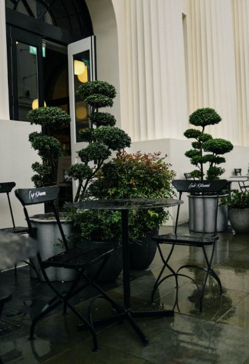
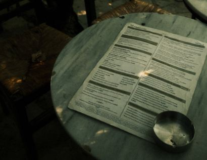

woodvale coffee was found in 1989 today it is widely known as
one of the most diverse coffee brands ever

Our story begins in 1989 along the cobblestone streets of Cornelia Street's Market.
It was here where Woodvale Coffee opened its first store,
offering fresh-roasted coffee beans, tea and spices from around the world
for our customers to take home.

CONTACTS:
instagram: @wvcoffee twitter: @woodvalecoffee
☏ +706-316-7715
Whether you're searching for something new to warm your mug,
seeking the best brew method for your favorite blend or exploring our rarest offerings,
you’ve come to the right place.
From K-Cup pods to Woodvale Coffee® Premium Instant,
we offer a wide selection of coffee to fill your cup.